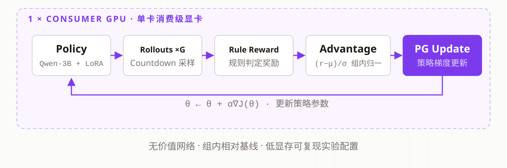

GRPO + LoRA 后训练实验 · 单卡可复现 · Apache-2.0
GRPO + LoRA post-training experiments · one GPU, reproducible · Apache-2.0
A home lab for teaching a small AI to get smarter at a numbers game — on a single gaming GPU, with every result reproducible and honestly reported.
一间「家庭实验室」:在一块游戏显卡上,教一个小 AI 越来越会玩数字游戏——每个结果都可复现、都被如实报告。
Big AI models go to "school" (pre-training: reading the whole internet) and then get "on-the-job training" (post-training: practicing with feedback). This project studies post-training — specifically RL (reinforcement learning): letting the model practice a game, and rewarding good answers.
大模型要先「上学」(预训练:读遍互联网),再「上岗培训」(后训练:带着反馈做练习)。这个项目研究后训练中的强化学习(RL):让模型反复练习一个游戏,答得好就奖励。
Given a few numbers, combine them with + − × ÷ to hit a target. Simple for humans, a great gym for a small model — answers are either right or wrong, so rewards are automatic.
给定几个数字,用加减乘除凑出目标数。对人很简单,对小模型却是绝佳的健身房——答案非对即错,奖励自动就能打分。
One prompt is sampled into a group of rollouts; rewards are scored by rules, centered and scaled within the group, and the policy gradient update flows back into the LoRA adapter — no value network needed.
同一道提示采样出一组答案;规则打分后,奖励在组内做归一化,策略梯度更新回流进 LoRA 适配器——全程不需要价值网络。

The core loop stays tiny. Alarms, stopwatches, safety valves and diagnostic meters all plug into it as hooks — snap in what you need for an experiment, snap out when done.
核心循环保持极小。闹钟(学习率调度)、秒表(计时)、安全阀(异常告警)、诊断仪表(互信息)全部做成可插拔的挂钩——做实验时插上,做完拔掉。
"3 7 8 → 24" and "8 3 7 → 24" are the same puzzle rearranged. The splitter guarantees such twins never land in both the practice set and the test set — so the score measures real skill, not memory.
「3 7 8→24」和「8 3 7→24」是同一道题的换装。数据划分保证这类双胞胎绝不会同时出现在练习卷和考试卷里——这样分数考的是真本事,不是背题。
LoRA freezes the model and trains only a small adapter — like rewiring an adapter plug instead of rebuilding the house. That's how a 3-billion-parameter model fits on one consumer GPU.
LoRA 把大模型冻住,只训练外挂的小适配器——相当于换一个转接头,而不是重新装修整栋房子。30 亿参数的模型因此能塞进一块消费级显卡。
The fine print: the LoRA runs used twice the practice budget, so the honest claim is "the low-memory recipe scores higher under equal experiment budget" — not "LoRA is magic". The README says so itself.
小字说明:LoRA 组用了两倍的练习预算,所以诚实的结论是「同等实验预算下,低显存配方得分更高」——而不是「LoRA 有魔力」。README 里自己就是这么写的。